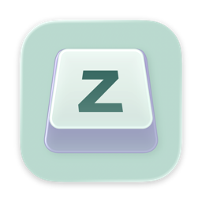
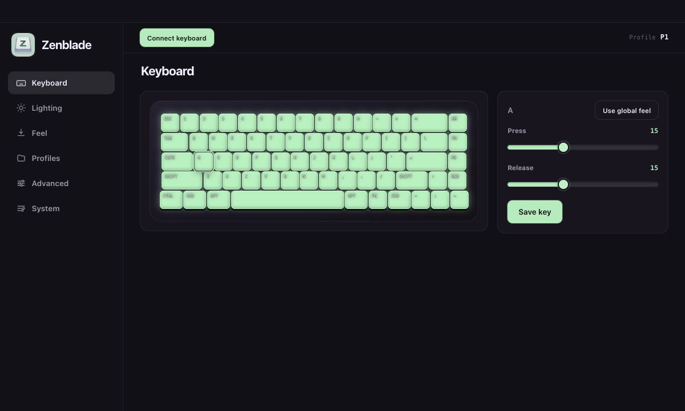

1. Open the download
Open the DMG from your browser’s Downloads list.
2. Drag to Applications
Move Zenblade into the Applications folder in the install window.
3. Allow the first launch
Try opening Zenblade from Applications. If macOS blocks it, open System Settings → Privacy & Security, scroll to the security notice, and click Open Anyway. Confirm Open when prompted. On macOS 12, use System Preferences → Security & Privacy.
4. Connect your keyboard
Connect your Zenblade 65 V2 over USB, open the app, and select Connect keyboard.
This community build is not signed with an Apple Developer ID or notarized by Apple. The code is public: review the source or build it yourself before deciding to install it. Security notes